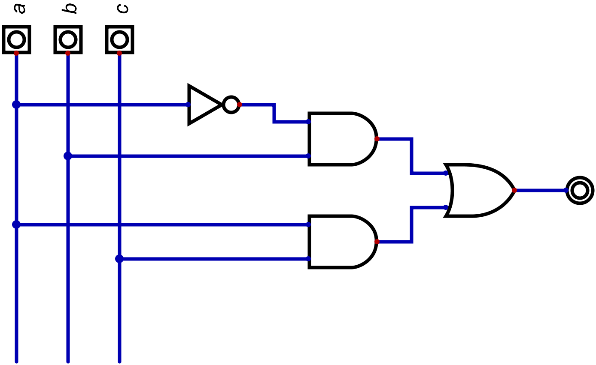

Definizione - Rete combinatoria
Una rete logica si definisce combinatoria se le uscite (dette variabili dipendenti) dipendono univocamente dagli ingressi (variabili dipendenti) correnti. Ciò significa che in presenza di una stessa configurazione di ingressi si ha sempre lo stesso risultato.
Il comportamento di una rete combinatoria può essere espresso con una descrizione in linguaggio naturale (che non è tuttavia univocamente interpretabile) o con una tabella della verità mentre la struttura può essere espressa in modo equivalente da un'espressione o da uno schema logico (si sceglie il migliore in base alle esigenze).
Il comportamento di una rete combinatoria può essere espresso con una descrizione in linguaggio naturale (che non è tuttavia univocamente interpretabile) o con una tabella della verità mentre la struttura può essere espressa in modo equivalente da un'espressione o da uno schema logico (si sceglie il migliore in base alle esigenze).
Definizione - Composizione e decomposizione di reti combinatorie
Disporre in serie e/o paralello delle reti combinatorie forma ancora una rete combinatoria.
Decomporre una singola rete combinatoria con \( m\) uscite in \( m\) reti combinatorie poste in parallelo con una sola uscita è possibile e può essere utile per studiare questo tipo di reti.
Decomporre una singola rete combinatoria con \( m\) uscite in \( m\) reti combinatorie poste in parallelo con una sola uscita è possibile e può essere utile per studiare questo tipo di reti.
Definizione - Da espressione a schema logico
Ogni struttura formata da gate connessi in serie e/o parallelo è descritta da una e una sola espressione ed ogni espressione descrive una sola struttura formata da gate connessi in serie e/o in parallelo. Esiste quindi una relazione 1:1.
Per individuare uno schema descritto da un'espressione è necessario partire dalle espressioni con priorità maggiore (quindi gli AND e le espressioni tra parentesi) sostituendole con lo schema equivalente e ripetere il procedimento per ogni espressione.
Per individuare uno schema descritto da un'espressione è necessario partire dalle espressioni con priorità maggiore (quindi gli AND e le espressioni tra parentesi) sostituendole con lo schema equivalente e ripetere il procedimento per ogni espressione.
Esempio - Da espressione a schema logico
Si vuole creare lo schema logico corrispondente alla seguente espressione \[ a' \cdot b + a \cdot c \] innanzitutto dividiamolo in parentesi, ottenendo \[ ((a') \cdot b) + (a \cdot c) \] A questo punto, partendo dalle parentesi più interne, aggiungiamo componenti, ovvero
- iniziamo dall'espressione \( (a')\):

- continuiamo con l'espressione \( ((a') \cdot b)\):
- e aggiungiamo l'espressione \( (a \cdot c)\);

- infine, uniamo i risultati di queste due espressioni con un gate OR, in modo da rappresentare l'espressione \( ((a') \cdot b) + (a \cdot c)\)
Definizione - Analisi - Da espressione a tabella della verità
Per ottenere la tabella della verità da un'espressione di \( n\) input è sufficiente sostituire ad ogni variabile il suo valore. Ripetendo tale processo per \( 2^{n}\) volte, ovvero provando ogni possibile combinazione di ingressi, si ottiene la tabella della verità.
Definizione - Sintesi - Da tabella della verità a espressioni
Dato che ogni tabella della verità può essere espressa da diverse espressioni, si pone il problema di quale tra queste utilizzare. Uno dei metodi più semplici è utilizzare le espressioni canoniche.
Definizione - Espressione canonica SP (Somma di Prodotti)
"Ogni funzione di \( n\) variabili è descritta (ovvero si può creare) da una somma di tanti prodotti logici quante sono le configurazioni per cui vale \( 1\). In ciascun prodotto (detto anche mintermine) appare ogni variabile in forma vera se nella configurazione corrente vale \( 1\), in forma negata se vale \( 0\)".
Osservazioni personali - Why works?
Tale algoritmo è valido in quanto è possibile considerare il valore \( 1\) come neutro per il gate AND e il valore \( 1\) come dominante nel gate OR.
Considerando quindi le configurazioni che hanno valore \( 1\), si va a creare per il prodotto corrispondente il valore \( 1\) che andrà poi a modificare l'uscita.
Considerando quindi le configurazioni che hanno valore \( 1\), si va a creare per il prodotto corrispondente il valore \( 1\) che andrà poi a modificare l'uscita.
Esempio - Ottenere l'espressione canonica SP da una tabella della verità
Considerando la seguente tabella della verità  si vuole ottenere l'espressione canonica SP. Consideriamo quindi le configurazioni per cui la funzione (ovvero l'uscita \( z\)) vale \( 1\): si hanno quindi due casi.
si vuole ottenere l'espressione canonica SP. Consideriamo quindi le configurazioni per cui la funzione (ovvero l'uscita \( z\)) vale \( 1\): si hanno quindi due casi.
Procediamo quindi con la consapevolezza che avremo la somma di due prodotti logici, ovvero \[ (\ldots) + (\ldots) \] Consideriamo quindi queste due configurazioni: L'algoritmo prevede che in ciascun prodotto ogni variabile appare nella sua forma "vera" se ha valore \( 1\) mentre nella sua forma negata se ha valore \( 0\).
L'algoritmo prevede che in ciascun prodotto ogni variabile appare nella sua forma "vera" se ha valore \( 1\) mentre nella sua forma negata se ha valore \( 0\).
Considerando quindi la prima configurazione, avremo che il mintermine corrispondente è il seguente \[ (\bar{x} \cdot y) + (\ldots) \] in quanto \( x\) ha valore \( 0\) e \( y\) ha valore \( 1\). Procedendo in maniera analoga, avremo che il secondo mintermine è il seguente: \[ (\bar{x} \cdot y) + (x \cdot \bar{y}) \]
Procediamo quindi con la consapevolezza che avremo la somma di due prodotti logici, ovvero \[ (\ldots) + (\ldots) \] Consideriamo quindi queste due configurazioni:
Considerando quindi la prima configurazione, avremo che il mintermine corrispondente è il seguente \[ (\bar{x} \cdot y) + (\ldots) \] in quanto \( x\) ha valore \( 0\) e \( y\) ha valore \( 1\). Procedendo in maniera analoga, avremo che il secondo mintermine è il seguente: \[ (\bar{x} \cdot y) + (x \cdot \bar{y}) \]
Definizione - Espressione canonica PS (Prodotto di somme)
"Ogni funzione di \( n\) variabili è descritta (ovvero può essere creare) da un prodotto di tante somme logiche quante sono le configurazioni per cui vale \( 0\). In ciascuna somma (detta anche maxtermine) appare ogni variabile in forma vera se nella configurazione corrente vale \( 0\), in forma negata se vale \( 1\)".
Definizione - Notazione simbolica per le espressioni canoniche
Considerando una funzione \( S\) dipendente da tre ingressi \( a, b, c\), per indicare la sua realizzazione con la forma canonica SP si utilizza la seguente notazione \[ S(a, b, c) = \sum_{3} m(0, 1, 2, 3) \] dove il \( 3\) a pedice indica il numero di ingressi e \( 0, 1, 2, 3\) sono le configurazioni in binario degli ingressi in cui la funzione vale \( 1\) (i mintermini). Tale espresione equivale alla seguente espressione \[ S(a, b, c) = (a' \cdot b' \cdot c) + (a' \cdot b \cdot c') + (a' \cdot b \cdot c) + (a \cdot b' \cdot c') \]
Analogamente, per indicare la sua realizzazione con la forma canonica \( PS\), si utilizza la seguente notazione \[ S(a, b, c) = \prod_{3} M(4, 5, 6, 7) \] dove il \( 3\) a pedice indica il numero di ingressi e \( 4, 5, 6, 7\) sono le configurazioni in binario degli ingressi in cui la funzione vale \( 0\) (i maxtermini).
Analogamente, per indicare la sua realizzazione con la forma canonica \( PS\), si utilizza la seguente notazione \[ S(a, b, c) = \prod_{3} M(4, 5, 6, 7) \] dove il \( 3\) a pedice indica il numero di ingressi e \( 4, 5, 6, 7\) sono le configurazioni in binario degli ingressi in cui la funzione vale \( 0\) (i maxtermini).
Definizione - Il problema della sintesi
Quando si progetta una rete combinatoria si possono considerare diversi parametri (anche contrapposti):
- la rapidità di progetto, ovvero quanto tempo si impiega per realizzare il circuito;
- la massima velocità della rete, ovvero il tempo che impiega la rete per eseguire le varie operazioni;
- la massima flessibilità, ovvero quanto la rete si può adattare ai cambiamenti;
- la minima complessità, ovvero quanti e quali gate sono impiegati per realizzare la rete.
- reti programmabili, caratterizzate da rapidità di progetto e massima flessibilità;
- reti di costo minimo, caratterizzate da massima velocità e minima complessità.
Definizione - Ritardo complessivo di una rete combinatoria
Dato che l'astrazione della tabella della verità nasconde il ritardo di propagazione del gate reale (che può cambiare da una tecnologia ad un'altra, ma anche se si passa da valore \( 0\) a \( 1\) o viceversa), risulta quindi utile considerare il ritardo \( \tau_{p}\) equivalente al caso peggiore possibile.
Seguendo questo ragionamento, si considera il ritardo complessivo della rete come la somma dei ritardi presenti sul percorso più lungo.
Seguendo questo ragionamento, si considera il ritardo complessivo della rete come la somma dei ritardi presenti sul percorso più lungo.
Definizione - Complessità di una rete combinatoria
Per confrontare la complessità e la velocità di risposta di reti combinatorie si valutano tre indicatori:
- \( n_{gate}\), ovvero il numero di gate (maggiore è questo numero, più complessa è la rete);
- \( n_{conn}\), ovvero il numero totale di ingressi dei gate (maggiore è questo numero, più complessa è la rete);
- \( n_{casc}\), ovvero il massimo numero di gate disposti in cascata (minore è questo numero, più veloce è la rete).
Osservazioni personali - Ad esempio
Consideriamo la rete \( x + (y \cdot z)\), la cui rappresentazione è la seguente  si hanno invece le seguenti caratteristiche:
si hanno invece le seguenti caratteristiche:
si ha che tale rete ha le seguenti caratteristiche:
- \( n_{gate} = 3\);
- \( n_{conn} = 4\);
- \( n_{casc} = 2\).
- \( n_{gate} = 3\);
- \( n_{conn} = 6\);
- \( n_{casc} = 2\).
Definizione - Ottenere reti di costo minimo
Consideriamo per ipotesi di avere:
Un metodo per ottenere espressioni migliori è sfruttare le equivalenze notevoli fino a raggiungere l'espressione di costo minimo. Tuttavia risulta essere difficile capire se si è raggiunto il risultato migliore. Seguendo il principio di funzionamento delle espressioni canoniche (dove è sufficiente che un mintermine (o un maxtermine) si "attivi" affinchè si "attivi" il circuito), può essere utile utilizzare dei termini che riconoscano più di una configurazione (ovvero gli implicanti e gli implicati).
- ingressi disponibili sia in forma vera che in forma negata;
- fan-in dei gate a piacere
- con numero massimo di gate in cascata pari a \( 2\);
- con il minimo numero di gate;
- con il minimo numero di ingressi per i gate.
Un metodo per ottenere espressioni migliori è sfruttare le equivalenze notevoli fino a raggiungere l'espressione di costo minimo. Tuttavia risulta essere difficile capire se si è raggiunto il risultato migliore. Seguendo il principio di funzionamento delle espressioni canoniche (dove è sufficiente che un mintermine (o un maxtermine) si "attivi" affinchè si "attivi" il circuito), può essere utile utilizzare dei termini che riconoscano più di una configurazione (ovvero gli implicanti e gli implicati).
Definizione - Implicante e implicante primo
Un implicante è un termine prodotto di \( n\) o meno variabili (dove \( n\) è il numero di ingressi della rete) che assume il valore \( 1\) solo per configurazioni in cui la funzione vale \( 1\) o indifferenza (ovvero vale \( 1\) in tutte quelle configurazioni che sono descritte dall'implicante).
Un implicante primo è invece un implicante che cessa di essere tale rimuovendo un qualsiasi suo letterale.
Un implicante primo si dice essenziale se esiste almeno un mintermine che non è coperto da nessun altro implicante primo (ovvero se per almeno un \( 1\) (senza considerare i \( -\)) tale implicante è l'unico implicante primo che lo descrive).
Un implicante primo è invece un implicante che cessa di essere tale rimuovendo un qualsiasi suo letterale.
Un implicante primo si dice essenziale se esiste almeno un mintermine che non è coperto da nessun altro implicante primo (ovvero se per almeno un \( 1\) (senza considerare i \( -\)) tale implicante è l'unico implicante primo che lo descrive).
Osservazioni personali - Ad esempio
Considerando la seguente tabella della verità  si ha che i mintermini (ovvero tre ingressi) sono \[ a' \cdot b' \cdot c' \mid a' \cdot b' \cdot c \mid a' \cdot b \cdot c' \mid a' \cdot b \cdot c \mid a \cdot b' \cdot c' \mid a \cdot b \cdot c \] ovvero tutti i termini che hanno \( 1\) o \( -\) come uscita.
si ha che i mintermini (ovvero tre ingressi) sono \[ a' \cdot b' \cdot c' \mid a' \cdot b' \cdot c \mid a' \cdot b \cdot c' \mid a' \cdot b \cdot c \mid a \cdot b' \cdot c' \mid a \cdot b \cdot c \] ovvero tutti i termini che hanno \( 1\) o \( -\) come uscita.
Consideriamo ora i termini a due ingressi, si ha che sono: \[ a' \cdot b' \mid a' \cdot b \mid a' \cdot c \mid a \cdot c' \mid b' \cdot c' \mid b \cdot c \] ovvero si ha che tutte le configurazioni che presentano i bit \( a\) e \( b\) a \( 0\) (ovvero \( a'\), \( b'\)) hanno come configurazione di uscita \( 1\) o indifferenza (e così via).
Considerando infine i termini ad un ingresso, si ha \[ a' \] Di tutti questi implicanti, si ha che solo \[ a' \mid b' \cdot c' \mid b \cdot c \] sono implicanti primi. in quanto (ad esempio) nel caso \( a' \cdot b\) si ha che rimuovendo \( a'\) cessa di essere un implicante ma rimuovendo \( b\) no, quindi si ha che non è un implicante primo.
Di questi implicanti primi, si ha che:
Consideriamo ora i termini a due ingressi, si ha che sono: \[ a' \cdot b' \mid a' \cdot b \mid a' \cdot c \mid a \cdot c' \mid b' \cdot c' \mid b \cdot c \] ovvero si ha che tutte le configurazioni che presentano i bit \( a\) e \( b\) a \( 0\) (ovvero \( a'\), \( b'\)) hanno come configurazione di uscita \( 1\) o indifferenza (e così via).
Considerando infine i termini ad un ingresso, si ha \[ a' \] Di tutti questi implicanti, si ha che solo \[ a' \mid b' \cdot c' \mid b \cdot c \] sono implicanti primi. in quanto (ad esempio) nel caso \( a' \cdot b\) si ha che rimuovendo \( a'\) cessa di essere un implicante ma rimuovendo \( b\) no, quindi si ha che non è un implicante primo.
Di questi implicanti primi, si ha che:
- \( a'\) è un implicante primo essenziale, in quanto per le configurazioni \( 001\) e \( 010\) è l'unico implicante valido;
- \( b' \cdot c'\) non è un implicante primo essenziale, in quanto descrive solo la configurazione \( 000\) che è già descritta da \( a'\). Descrive inoltre la configurazione \( 100\) che tuttavia ha come risultato \( -\).
- \( b \cdot c\) è un implicante primo essenziale, in quanto è l'unico a descrivere la configurazione \( 111\).
Definizione - Implicato e implicato primo
Un implicato è un termine somma di \( n\) o meno variabili (dove \( n\) è il numero di ingressi della rete) che assume il valore \( 0\) solo per configurazioni in cui la funzione vale \( 0\) o indifferenza (ovvero vale \( 0\) in tutte quelle configurazioni che sono descritte dall'implicato).
Un implicato primo è invece un implicato che cessa di essere tale rimuovendo un qualsiasi suo letterale.
Un implicato primo si dice essenziale se esiste almeno un maxtermine che non è coperto da nessun altro implicante primo (ovvero se per almeno uno \( 0\) (senza considerare i \( -\)) tale implicato è l'unico implicato primo che lo descrive).
Un implicato primo è invece un implicato che cessa di essere tale rimuovendo un qualsiasi suo letterale.
Un implicato primo si dice essenziale se esiste almeno un maxtermine che non è coperto da nessun altro implicante primo (ovvero se per almeno uno \( 0\) (senza considerare i \( -\)) tale implicato è l'unico implicato primo che lo descrive).
Definizione - Espressione minima
L'espressione minima associata ad una qualsiasi tabella della verità è la somma di implicanti primi essenziali nel caso SP, mentre è il prodotto degli implicati primi essenziali nel caso PS.
Per ottenere l'espressione minima esistono sia metodi algoritmici, eseguiti solitamente da un calcolatore, che metodi grafici, eseguibili manualmente dall'essere umano.
Per ottenere l'espressione minima esistono sia metodi algoritmici, eseguiti solitamente da un calcolatore, che metodi grafici, eseguibili manualmente dall'essere umano.
Definizione - Mappa di Karnaugh
Una mappa di Karnaugh è la rappresentazione bidimensionale della tabella della verità di una funzione fino a quattro variabili. Le configurazioni di ingresse sono elencate ai bordi utilizzando il codice di Gray, che permette di avere configurazioni consecutive che differiscono per un solo bit.
Le mappe permettono di identificare graficamente configurazioni adiacenti con lo stesso valore di uscita (cosa utile per trovare poi implicanti e implicati primi essenziali).
Le mappe permettono di identificare graficamente configurazioni adiacenti con lo stesso valore di uscita (cosa utile per trovare poi implicanti e implicati primi essenziali).
Osservazioni personali - Ad esempio
La tabella della verità  è rappresentata dalla seguente mappa di Karnaugh
è rappresentata dalla seguente mappa di Karnaugh 
Definizione - Celle adiacenti su mappe di Karnaugh
In una mappa che descrive una funzione di \( n\) variabili si ha che ogni cella ha \( n\) celle adiacenti. Ogni cella è adiacente a tutte le celle le cui coordinate differiscono di un solo bit.
Graficamente si hanno le seguenti regole:
Graficamente si hanno le seguenti regole:
- sono adiacenti le celle aventi un lato in comune, ovvero
- sono adiacenti le celle poste all'estremità di una stessa riga o colonna, ovvero

- quando si hanno più mappe, sono adiacenti le celle che occupano la stessa posizione nelle sotto-mappe adiacenti, ovvero

Definizione - Raggruppamento rettangolare
In una mappa di Karnaugh, un raggruppamento rettangolare di ordine \( p\) è un insieme di \( 2^{p}\) celle (il cui valore è uguale o è indifferenza) che hanno \( p\) celle adiacenti dello stesso valore (o indifferenza).
Osservazioni personali - Ad esempio
Considerando la seguente mappa  sono evidenziati due raggruppamenti di \( 8\) celle (ovvero di ordine \( 3\)) e si ha che ogni cella ha almeno \( 3\) celle adiacenti dello stesso valore.
sono evidenziati due raggruppamenti di \( 8\) celle (ovvero di ordine \( 3\)) e si ha che ogni cella ha almeno \( 3\) celle adiacenti dello stesso valore.
Ad esempio, nel caso della cella \( 0000\)
Ad esempio, nel caso della cella \( 0000\)
Definizione - Raggruppamenti rettangolari ed implicanti
Considerando un raggruppamento di ordine \( p\) le cui celle hanno valore \( 1\), esso individua un implicante della funzione. In particolare, si avrà un prodotto di \( (n - p)\) variabili (ovvero le variabili che rimangono uguali per tutte le celle del raggruppamento) in forma vera se valgono \( 1\) ed in forma negata se valgono \( 0\).
Inoltre ogni raggruppamento che non è incluso in un altro raggruppamento di ordine superiore, è un implicante primo.
Inoltre ogni raggruppamento che non è incluso in un altro raggruppamento di ordine superiore, è un implicante primo.
Osservazioni personali - Ad esempio
Considerando la seguente mappa  si ha che il raggruppamento evidenziato rappresenta un implicante, in particolare si ha che:
si ha che il raggruppamento evidenziato rappresenta un implicante, in particolare si ha che:
- la variabile \( a\) varia;
- la variabile \( b\) rimane costante (ed ha valore \( 1\));
- la variabile \( c\) rimane costante (ed ha valore \( 0\));
- la variabile \( d\) varia.
Definizione - Raggruppamenti rettangolari ed implicati
Considerando un raggruppamento di ordine \( p\) le cui celle hanno valore \( 0\), esso individua un implicato della funzione. In particolare, si avrà una somma di \( (n - p)\) variabili (ovvero le celle le cui coordinate rimangono uguali per tutte le celle del raggruppamento) in forma vera se valgono \( 0\) ed in forma negata se valgono \( 1\).
Inoltre ogni raggruppamento che non è incluso in un altro raggruppamento di ordine superiore, è un implicato primo.
Inoltre ogni raggruppamento che non è incluso in un altro raggruppamento di ordine superiore, è un implicato primo.
Osservazioni personali - Ad esempio
Considerando la seguente mappa  si hanno due raggruppamenti evidenziati: il più piccolo è un raggruppamento di ordine \( 2\) mentre il più grande è di ordine \( 3\). Si ha quindi il minore non è un implicato primo, in quanto si ha che è contenuto in un raggruppamento più grande.
si hanno due raggruppamenti evidenziati: il più piccolo è un raggruppamento di ordine \( 2\) mentre il più grande è di ordine \( 3\). Si ha quindi il minore non è un implicato primo, in quanto si ha che è contenuto in un raggruppamento più grande.
Considerando quindi il raggruppamento più grande si ha che:
Considerando quindi il raggruppamento più grande si ha che:
- la variabile \( a\) varia;
- la variabile \( b\) varia;
- la variabile \( c\) varia;
- la variabile \( d\) rimane costante (ed ha valore \( 1\)).
Definizione - Copertura di una funzione su una mappa
La copertura di una funzione su una mappa è l'insieme di raggruppamenti rettangolari composto dall'unione di tutte le celle contenenti valore \( 1\) o indifferenza (nel caso di "copertura degli uni") e \( 0\) o indifferenza (nel caso di "copertura degli zeri").
Ogni copertura fornisce una possibile espressione (SP nel caso di copertura degli uni, PS nel caso di copertura degli zeri).
Tra tutte le possibili coperture si possono individuare le coperture minime, ovvero quella composta dal minor numero possibile di raggruppamenti di dimensione massima.
Ogni copertura fornisce una possibile espressione (SP nel caso di copertura degli uni, PS nel caso di copertura degli zeri).
Tra tutte le possibili coperture si possono individuare le coperture minime, ovvero quella composta dal minor numero possibile di raggruppamenti di dimensione massima.
Osservazioni personali - Ad esempio
Considerando la seguente mappa
È possibile individuare due raggruppamenti:
corrispondenti agli implicati \( (c)\) e \( (a' + c' + d)\) (ovvero all'espressione \( (c \cdot (a' + c' + d))\)): non è tuttavia la copertura minima, in quanto lo è la seguente
corrispondente agli implicati \( (c)\) e \( (a' + d)\) (ovvero all'espressione \( c \cdot (a' + d)\)).
Definizione - Raggruppamenti e termini ridondanti
Un raggruppamento di dimensione massima le cui celle sono tutte incluse in altri raggruppamenti è un implicato primo non essenziale: non è quindi "utilizzabile" per ottenere la copertura minima.
Definizione - Individuare la copertura minima
Nonostante non esista un preciso algoritmo per l'individuazione della copertura minima, è però possibile delineare una serie di passi utili a questo scopo.
- per prima cosa, si sceglie che tipo di espressione cercare (SP o PS);
- si individuano i raggruppamenti rettangolari di dimensione maggiore: nel caso una stessa cella sia compresa in più di un raggruppamento, la si tiene in considerazione per il passo successivo;
- si raggruppano al meglio le celle rimanenti, tenendo conto anche di raggruppare la stessa cella con più di raggruppamenti (evitando però di creare raggruppamenti inutili).
Esempio - Sintesi minima di un encoder
Si vuole ottenere l'espressione minima di un encoder (in questo caso di un encoder a \( 3\) ingressi), ovvero una rete logica che converte un codice \( 1\) su \( N\) nel numero binario corrispondente.
In particolare, tale rete ha la seguente tabella della verità:
In particolare, tale rete ha la seguente tabella della verità:
Abbiamo quindi:
- la mappa relativa all'uscita \( z_{0}\)Per ottenere l'espressione SP consideriamo i seguenti raggruppamenti
 equivalenti all'espressione \( (x_{1} + x_{3})\).
equivalenti all'espressione \( (x_{1} + x_{3})\).
L'espressione PS sarà invece data dai seguenti raggruppamentila cui espressione equivalente è \( (x_{1} + x_{3})\), che è esattamente l'espressione minima del caso SP.
- la mappa relativa all'uscita \( z_{1}\)Per ottenere l'espressione SP consideriamo i seguenti raggruppamentiequivalenti all'espressione \( (x_{2} + x_{3})\).

L'espressione PS sarà invece data dai seguenti raggruppamentila cui espressione equivalente è \( (x_{2} + x_{3})\), che è esattamente l'espressione minima del caso SP.
Definizione - Da espressione a tabella della verità con Mappe di Karnaugh
È Se fino ad ora si sono utilizzate le mappe per effettuare la sintesi di una rete (da tabella della verità a espressione minima), è possibile utilizzarle anche per effettuare l'analisi (da espressione o schema logico a tabella della verità):
- data l'espressione (o dedotta dallo schema logico) la si deve trasformare in una somma di prodotti (ovvero un'espressione SP) o in un prodotto di somme (ovvero un'espressione PS);
- si disegna a questo punto una mappa vuota delle giuste dimensioni (ovvero per \( n\) ingressi, una mappa di \( 2^{n}\) celle);
- per ogni termine (mintermine nel caso SP, maxtermine nel caso PS) si disegna il raggruppamento corrispondente;
- si inseriscono gli \( 1\) (nel caso siano mintermini) e gli \( 0\) (nel caso siano maxtermini) nelle celle che fanno parte di almeno un raggruppamento, mentre si inserisce il valore non scelto nelle altre;
- si trasforma la mappa in una tabella della verità.
Esempio - Analisi con mappe di Karnaugh - Da espressione a tabella della verità
Considerando la seguente rete logica
Per farlo deduciamo l'espressione dallo schema logico:
Utilizziamo la prima legge di De Morgan (\( (a \cdot b)' = a' + b'\)) e otteniamo la seguente espressione \[ (a + c') \cdot (a' + b' + c) \cdot (b) \cdot (c) \] che è una forma PS.
Disegniamo ora una mappa di Karnaugh sufficientemente grande: dato che abbiamo \( 3\) ingressi, sarà una mappa di \( 8\) celle, ovvero Consideriamo quindi il primo raggruppamento descritto dal maxtermine \( a + c'\): dobbiamo quindi cercare le celle in cui l'ingresso \( a\) è uguale a \( 0\) mentre l'ingresso \( c\) è uguale a \( 1\) (in quanto è negato). Avremo quindi
Consideriamo quindi il primo raggruppamento descritto dal maxtermine \( a + c'\): dobbiamo quindi cercare le celle in cui l'ingresso \( a\) è uguale a \( 0\) mentre l'ingresso \( c\) è uguale a \( 1\) (in quanto è negato). Avremo quindi  e i raggruppamenti descritti da \( (b)\) e \( (c)\), ovvero
e i raggruppamenti descritti da \( (b)\) e \( (c)\), ovvero
si vuole effettuare l'analisi.
Per farlo deduciamo l'espressione dallo schema logico:
- innanzitutto, si può notare che il gate finale è un AND a quattro ingressi, equivalente all'espressione \[ (\ldots) \cdot (\ldots) \cdot (\ldots) \cdot (\ldots) \]
- nel primo ingresso vi è un OR a due ingressi, di cui uno è negato (ovvero \( (a + c')\)), da cui \[ (a + c') \cdot (\ldots) \cdot (\ldots) \cdot (\ldots) \]
- nel secondo vi è un OR a due ingressi, di cui uno è direttamente collegato a \( c\) e l'altro è un AND in serie ad un NOT con ingressi \( a\) e \( b\), ovvero, equivalente all'espressione \( ((a \cdot b)' + c)\), da cui \[ (a + c') \cdot ((a \cdot b)' + c) \cdot (\ldots) \cdot (\ldots) \]
- il terzo ingresso è collegato direttamente a \( b\) mentre il quarto a \( c\), da cui si può ottenere l'espressione definitiva \[ (a + c') \cdot ((a \cdot b)' + c) \cdot (b) \cdot (c) \]
Utilizziamo la prima legge di De Morgan (\( (a \cdot b)' = a' + b'\)) e otteniamo la seguente espressione \[ (a + c') \cdot (a' + b' + c) \cdot (b) \cdot (c) \] che è una forma PS.
Disegniamo ora una mappa di Karnaugh sufficientemente grande: dato che abbiamo \( 3\) ingressi, sarà una mappa di \( 8\) celle, ovvero
Con lo stesso ragionamento, disegnamo il raggruppamento descritto da \( (a' + b' + c)\), ovvero
Inseriamo quindi i valori nelle celle comprese nei raggruppamenti (in questo caso \( 0\) dato che abbiamo considerato i maxtermini) e otteniamo la seguente mappa
che è equivalente alla seguente tabella della verità
Definizione - Sintesi a NAND
Per effettuare la sintesi a NAND di una qualsiasi rete logica è possibile seguire il seguente algoritmo:
- si parte da un'espressione SP esplicitando le parentesi e gli operatori;
- si sostituiscono tutti gli operatori \( \cdot\) con operatori \( \uparrow\);
- si sostituiscono tutti gli operatori \( +\) con operatori \( \uparrow\) complementando le variabili singole (ovvero quelle non coinvolte in prodotti);
- nel caso non siano disponibili i segnali in forma negata, si esprimono tutti i segnali in tale forma con il NAND del segnale in forma vera.
Osservazioni personali - Espressione minima a NAND
Nel caso l'espressione di partenza SP sia nella sua forma minima, si ha che anche l'espressione a NAND è nella sua forma minima.
Esempio - Sintesi a NAND dell'EXOR
Si vuole effettuare la sintesi a NAND del componente EXOR, la cui espressione canonica SP è la seguente \[ (a \cdot b') + (a' \cdot b) \] Iniziamo quindi sostituendo tutti gli operatori \( \cdot\)\begin{aligned} & (a \uparrow b') + (a' \uparrow b) & \iff \end{aligned} Sostituiamo ora tutti gli operatori \( +\) (in questo caso non sono presenti variabili singole, quindi non è necessario complementare alcun ingresso) \begin{aligned} & (a \uparrow b') \uparrow (a' \uparrow b) & \iff \end{aligned} Sostituiamo infine tutti i segnali in forma negata con la loro rappresentazione a NAND \begin{aligned} & (a \uparrow (b \uparrow b)) \uparrow ((a \uparrow a) \uparrow b) & \end{aligned}
Definizione - Sintesi a NOR
Per effettuare la sintesi a NOR di una qualsiasi rete logica è possibile seguire il seguente algoritmo:
- si parte da un'espressione PS esplicitando le parentesi e gli operatori;
- si sostituiscono tutti gli operatori \( +\) con operatori \( \downarrow\);
- si sostituiscono tutti gli operatori \( \cdot\) con operatori \( \downarrow\) complementando le variabili singole (ovvero quelle non coinvolte in somme);
- nel caso non siano disponibili i segnali in forma negata, si esprimono tutti i segnali in tale forma con il NOR del segnale in forma vera.
Osservazioni personali - Espressione minima a NOR
Nel caso l'espressione di partenza PS sia nella sua forma minima, si ha che anche l'espressione a NOR è nella sua forma minima.
Esempio - Sintesi a NOR del EXNOR
Si vuole effettuare la sintesi a NOR del componente EXNOR ("equivalence"), la cui espressione canonica PS è la seguente \[ (a + b') \cdot (a' + b) \] Iniziamo quindi sostituendo tutti gli operatori \( +\)\begin{aligned} & (a \downarrow b') \cdot (a' \downarrow b) & \iff \end{aligned} Sostituiamo ora tutti gli operatori \( \cdot\) (in questo caso non sono presenti variabili singole, quindi non è necessario complementare alcun ingresso) \begin{aligned} & (a \downarrow b') \downarrow (a' \downarrow b) & \iff \end{aligned} Sostituiamo infine tutti i segnali in forma negata con la loro rappresentazione a NOR \begin{aligned} & (a \downarrow (b \downarrow b)) \downarrow ((a \downarrow a) \downarrow b) & \end{aligned}